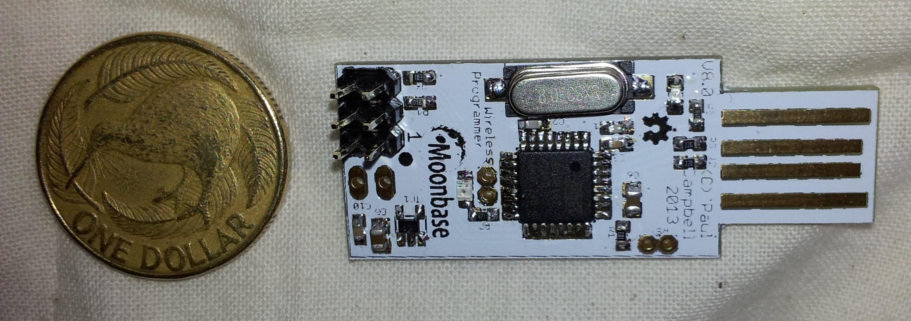

Simply:
This project started out with an attempt to make a really cheap RF platform for a Burning Man art project (to come) - with a $5-10 goal there weren't a lot of chips available to us - we chose the Texas Instruments (TI) CC2533 - it's cheap, can be built with a minimal component count and we can program it to update its software in the field. The CC2533 sends and receives 802.15.4 packets at 2.4GHz, there's hardware support for AES-128 encryption, an 8051 CPU and the usual collection of SoC devices uarts/spi/i2c/gpios/timers etc. This is the same protocol that Zigbee runs on top of - we're not explicitly using Zigbee protocols (but not precluding them), we're providing MAC level packet delivery, the rest is up to you.
Another issue is that GCC doesn't support 8051 CPUs, TI's sample code for programming the chip is only provided for a proprietary for-profit C compiler - we've produced our own set of RF libraries, and incorporated them into a minimalist OS. It includes encryption, timers, power control and software update over the air.
The result is a well-supported platform for cheap sensors, part of the much vaunted "internet of things", something you can build today.
Our basic platform includes a CC2533:
So roughly a fast Apple II in a chip with a radio.
The CC2533 comes in larger models (64k and 96k), and there are other devices in the CC25xx family with extra (USB, ADC) features, and alternate ones (BLE radios) - they all cost more. Our build system and much of our code supports, at least in part some of these platforms.
We've taken the CC253, added a 32MHz crystal and a handful of capacitors, a resistor, and a PCB folded dipole and used this basic circuit in a half dozen different designs. The first design we're going to make commercially available will be a development prototyping board - something that can be used to develop your own systems.
One downside of our CPU choice is that it requires a non-standard CPU programming system (ie it's not JTAG), we've produced a family of programmers and are releasing a really cheap one for general use. An even cheaper one will be released as soon as possible.
We've standardised on a simple 6-pin interface, this let's us use a simple pin header for development boards, and an extremely cheap (free) 6-pin TAG-Connect connector for manufacturing and where we need to keep costs down. The debug interface contains power/ground to power the board, the 3 pins required to program the CC25xx chips, and a uart output pin from the CC25xx for debug.

Our programmers can also be used as simple USB serial interfaces to talk to our prototyping board, for debug or as an interface, when they are not being used for programming.
Building a network of sensors that don't connect to the wider world is pretty useless, we're releasing a set of firmware for our prototyping board that, together with a USB serial interface (either our programming board or a stock FTDI cable) and a user-space RPC library, allows you to power the development board from USB and use it to send and receive data to your network. As an added bonus you can use it as a packet sniffer.
Putting 100 little sensors around your warehouse, or in our case in a patch of forest is a bit of a problem if you suddenly decide you find a bug, or need a new feature, and need to change the firmware running in them all - now you have to go out and find them, attach a programmer and load new code into each of them
Software Update Over The Air (SUOTA) allows us to push new code through our internet gateway to one board, and have that board update other boards around it, even those out of range of the gateway, letting new code ripple out to all the boards in the network as they connect to each other.
For comparison a NZ dollar has slightly smaller diameter than a US quarter.
| Basic Prototyping Board |
| Burning Man Art Project Board | Remote Pest Management System |
|  |
| Simple Programmer/Serial Board |
We have a Getting Started page it includes:
We have a Programming page it includes:
We're still in the alpha testing process, we don't have boards available for sale at this date, most are still hand-built, but please feel free to make a case for a dev system - drop Paul a note
Check out the various Github repositories for their various licenses - as a rule software is LGPLed while hardware is GPLed. The generic circuit, shown above under "Basic Platform" above, is published with no license, hack away.
No one does this alone, the great thing about open source is that we all get to stand on the shoulders of giants
{kind=link}
{kind=link}